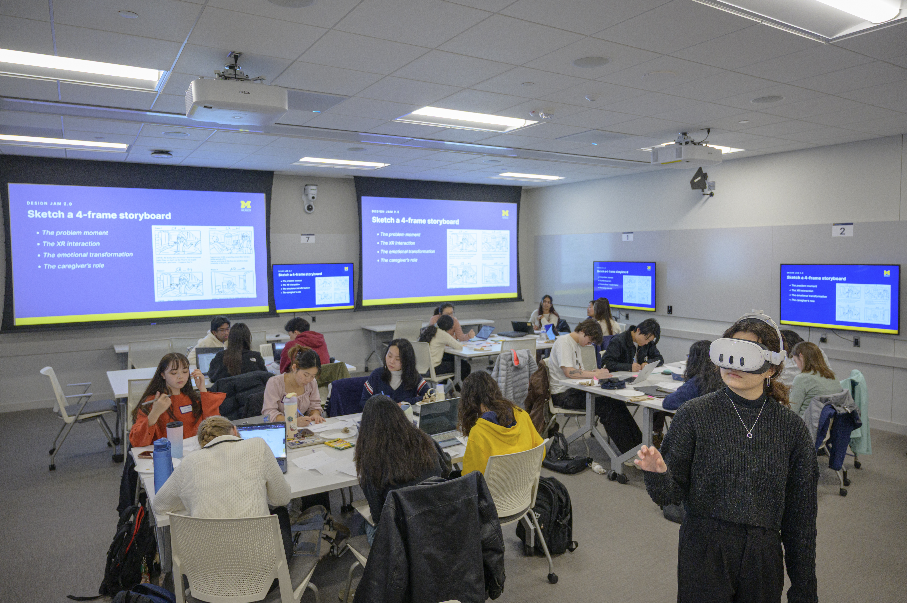

Explore how UMSI students connect information skills with community-based projects, local partners, and real-world learning. If you are a new student or a prospective student, you can build your confident from these small activities organized by the engagement learning office.
Design Jam Activities

Design Jam activities give students opportunities to collaborate, explore ideas, and respond to real design challenges.


Orientation for New Information School Students

Orientation introduces new students to the Information School community and prepares them to participate in collaborative learning experiences.